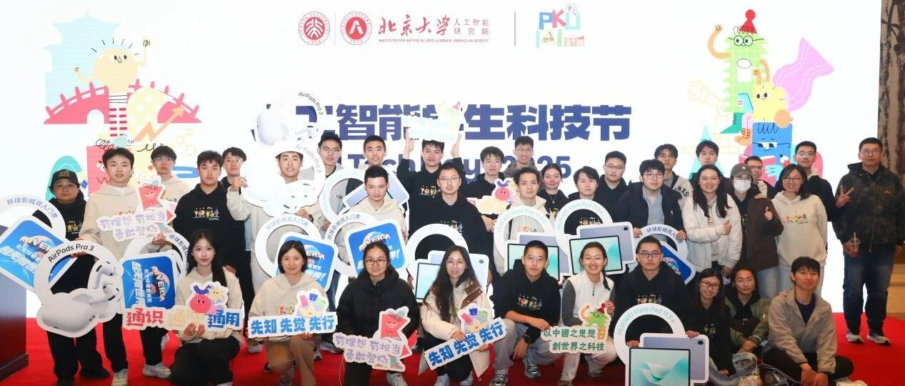

人工智能学生科技节：在北大，共赴一场科技盛会！


AI前沿成果集中亮相！
91项poster展示
10项demo展演
5篇口头报告分享
面对面与业内学术大咖交流
心连心与跨校跨学科好友同台竞技
1对1讲解AI学术动态
通用人工智能、AI+医疗健康、AI+人文社科、智能芯片、机器人与自动化
……
2025年10月25日
北京大学人工智能研究院
学生大会暨第三届科技节
在北京大学百周年纪念讲堂成功举办
集学术展示、跨界交流与科技体验于一体
邀请你，共赴一场科技盛会！

年度盛会：
思想凝聚，共话使命


10月25日上午，
北京大学人工智能研究院2025年度学生大会举行
多位嘉宾与全体师生出席
共同回顾年度成果，展望未来蓝图
大会在《通之歌》的旋律与
智能乐队带来的轻快的乐曲中拉开帷幕

自2021年首届通班开班以来
北大通班已招收五届、170余名学生
清华通班、北大智班也分别稳步发展
通班的三大核心理念是“通识、通智、通用”
强调人工智能与人文社会科学的深度融合
关注通用智能的整体性研究
体现人工智能在各行各业的广泛应用与社会渗透
同时，“通计划”自2023年启动以来
项目不断拓展，现已覆盖全国15所高校，
形成了跨学科、本博贯通的培养体系
元培学院院长李猛致辞
回顾了通班四年来的建设成果
强调跨学科育人模式的创新与延续
信息科学技术学院党委副书记贾方健致辞
勉励同学们夯实基础、勇于创新、知行合一
人工智能研究院院长朱松纯
鼓励青年学子以科学精神和社会责任并行
投身智能时代的创新实践


大会表彰奖学金获奖学生
左右滑动查看更多
大会表彰了通班、智班及研究院多项奖学金获奖学生
“用技术温暖社会、以初心回应时代”
是青年学子的使命与担当
胸怀理想、勇于创新
在智能时代的浪潮中以科学精神和社会责任并行
勇敢登场、扬帆起航
为中国乃至世界的智能文明建设贡献青春与智慧
创新盛典：
AI的未来，由青年定义
10月25日下午
第三届人工智能学生科技节
在北大百周年纪念讲堂成功举办


智创未来，融汇共进
本届科技节设置了
海报展示、Demo展演、学术报告、互动评选等多个环节
为青年学者搭建展示科研成果
交流创新思维的开放平台
开幕式上，院长朱松纯发表致辞
指出，真正的科学不止于发表论文
而在于“让成果被他人理解、被社会聆听”
鼓励青年学子将科研成果转化为推动社会进步的力量


海报与Demo展示环节成为全场焦点
从计算机视觉、自然语言处理到智能芯片、机器人控制
参展作品涵盖多个前沿方向
参展同学以清晰的逻辑、充满热情的讲解
赢得了师生们的驻足与讨论


以“智”会友，以学促思
5个专家评选出不同方向的优秀作品在舞台上
为师生们带来精彩绝伦的报告
展现算法、智能与想象力交织的魅力

A neural symbolic model for space physics
林昊苇
AI辅助科学发现的可行性与潜力

Embedding high-resolution touch across robotic hands enables adaptive human-like grasping
赵秭杭
关于“具有学习能力的高精度机器人手”的研究成果

Language Models Resist Alignment: Evidence From Data Compression
王恺乐
在研究语言模型在对齐过程中的内在机制中的贡献

Decompositional Neural Scene Reconstruction with Generative Diffusion Prior
倪俊锋
实现高保真、可编辑、可交互的场景重建

Precise and scalable analogue matrix equation solving using resistive random-access memory chips
左濮深
构建了一个基于阻变存储器阵列的高精度、可拓展的全模拟矩阵方程求解器。为应对未来智能计算与通信系统中的算力瓶颈提供了具有前景的技术平台。

vLLM-Ascend竞争力构建与实践
韩俊（华为特邀）
介绍业内VR技术的商业化现状、核心技术进展与优化实践
从理论到技术实践
从学术设想到业界前沿
以科研为笔，绘青春答卷
思想的火花在现场闪耀


左右滑动查看获奖同学合影
为提升活动的互动性与参与感
本届科技节延续
“最受欢迎奖”——
代表着现场观众们对作品的热爱与认可
“最佳创意奖”——
表彰那些独具创新思维的研究
“不觉明厉奖”——
授予那些令人惊叹、需要更深入理解的作品
三大奖项的评选机制，由现场观众投票决定
还特设了由专家评委推荐的全场表现最佳作品
海报区贴纸区、抽奖环节成为热闹焦点
更有精美的活动文创产品为同学们发放


“这是我第一次真正参加这样的学术活动，我认为科学的价值不仅在于研究本身，更在于被他人理解和聆听的过程。”
“方方面面都感受到了主办方的用心，做为presenter，在北大几年参加过的最好的学术活动啦，没有之一！”
“真的非常有收获！希望科技节越办越好！”
“和不同的人交流科研，我还加了几个教授微信呢！”
科技节在掌声与笑声中落下帷幕
但探索的脚步仍未停歇
科学不是终点
而是一场关于理解与创造的旅程


智慧传承：以创新致未来
院长朱松纯表示
科技节不仅是科研展示的平台
更是青年人才的成长舞台
经过多年积累，
北大人工智能研究院已成为中国乃至世界人工智能教育与研究的重要引领者
我们期待同学们在科研与思想的交织中
创造更多“全球首创”的成果

从学生大会的庄严启程
到科技节的思想盛宴
人工智能研究院以开放、融合、共创的精神
为青年学者提供了展现自我与交流思想的舞台
未来，研究院将继续坚持“立德树人、融智创新”
培养具有国际视野与社会担当的新时代科研人才
我们下一届科技节再会！


撰稿｜赵绮萱
摄影摄像｜古彤、许雅迪、经典瞬间
剪辑｜许雅迪
排版｜梁文凯玥


— 版权声明 —
转载自“北京大学人工智能研究院”公众号。本微信公众号所有内容，由北京大学人工智能研究院微信自身创作、收集的文字、图片和音视频资料，版权属北京大学人工智能研究院微信所有；从公开渠道收集、整理及授权转载的文字、图片和音视频资料，版权属原作者。本公众号内容原作者如不愿在本号刊登内容，请及时通知本号，予以删除。